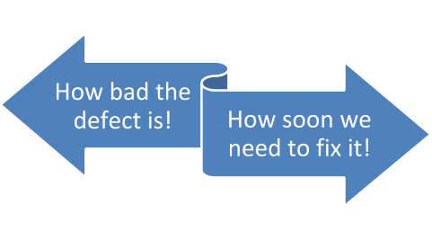

Defect Creation
DC-1 Define the defect
State the platform and version
Log in and examine data (client, patient, program selected)
List any nonstandard configuration settings with values
State the workflow direction through the application
DC-2 Research to narrow down the root cause and get beyond the defect symptom
Retest until you have the exact steps in the correct order to reproduce the defect
Define the who, what, where, when, and how you found the defect
Execute database queries
Scan error logs
If the defect is intermittent, say so
DC-3 Add support documentation
Screenshots
Video
Step recording files
Error log data
Database query results
DC- 4Format all text for readability and easy understanding
Stick to a known and familiar format when possible
List using bulleted or numbered lists
Keep textual descriptions succinct and direct
Facts only; no opinion, no suggestions, no accusations, no blame
Full defect report example
The following is a full-text example of a defect report:
Summary
Allergy button not highlighted in red and user able to enter medication.
Description
Allergy button fails to highlight in red when an allergy is saved on the patient record. Additionally, allergy entry is configured to disallow medication entry of the interacting medication. User is able to enter and save the medication that to which the patient is allergic.
Build/Platform
Windows 10/IE 11.5.1 / OS X Yosemite/Safari 10.0.3
Steps to reproduce
-
Setup: Set the allergy configuration to ALWAYS BLOCK and save.
-
Log in as a MD user with full access.
-
Select a patient with an existing, saved allergy to penicillin.
-
View the Allergy alert button in the upper right corner.
-
Enter a medication order for penicillin, q4h for 30 days. Save.
Actual results
The allergy button doesn't refresh and turn red to alert users to the presence of an allergy, and it allows the user to add the medication even though the allergy is on the patient record.
Expected results
The allergy button automatically refreshes anytime a new allergy is entered and saved. The button turns red to indicate an allergy exists for the patient. The MD user is blocked from saving a medication order on the patient record when the allergy is present. The configuration setting of ALWAYS BLOCK allows the medication order to be blocked regardless of the severity of the allergy.
Evidence and supporting documentation
See the red arrow in the sample screenshot below. The allergy button should be displaying where the red rectangle is drawn.
NOTE: Configuration set to block medication entry when any related allergy exists on the patient record regardless of severity value. User is an MD with full access. Database table displays the correct allergy value on the patient. No errors generated in the error log. Defect Severity and Priority
Severity
A blocking bug affects the inoperability of a system, and as a result, proceed work with the application under test, or its essential functions become Functioning of a scheme can only be ensured by a solution of the problem.
A critical error can be caused by malfunctioning key business logic, a security hole, an issue that resulted in a temporary disability of server or causing a part of the system to fail, without the ability to fix the bug applying input points. The solution of the problem is necessary for continuous operation of the essential functions of the system under test.
A major defect happens when the piece of the business rationale is not working accurately. The bug is not critical unless there is a chance to proceed with the capacity being tested utilizing other input data.
Such bug does not aggravate the rationale of tested part of the application. Usually, it is a prominent issue of the UI. S5 Trivial.
It is an insignificant mistake that does not concern the business rationale of the application is an inadequately reproducible problem scarcely noticeable through the interface. This defect of third-party libraries or services does not have any effect on the quality of the product.
Priority
P1 High.
The error has to be fixed the soonest way since its availability is essential for proper operability.
P2 Medium.
Elimination of the error is required, though its availability is not critical, but needs a binding elimination.
P3 Low.
The presence of a bug is not critical and does not require an urgent solution.
Basic Understanding Between Bug Severity and Priority
1. Severity
Severity is how austere a bug is! The severity of a bug is derived based on the effect of that bug on the system. It indicates the level of threat that a bug can affect the system. Severity is divided into levels, such as-
Realizing the Severity of a bug is critical from risk assessment and management point of view.
2. Priority
Priority is how quickly a bug should be fixed and eradicated from the website. Bug priority indicates the sense of urgency for dealing with a bug on our website.
Buggy software or a website may severely infect the roster, which is a result, can lead to a re-evaluation of risk and priorities, which turn out to be more time, and resource consuming. This is why Shift-left testing is trending in order to evaluate the risk and bugs by testing a website as early as possible. In shift-left testing, you implement website testing right from the requirement gathering phase. That being said, prioritizing a bug in the right manner goes a long way in planning your SDLC(Software Development Lifecycle).
Bug Severity vs Priority
 >
Bug Severity is the degree of impact that a defect has on the system; whereas, Bug Priority is the order of severity which has impacted the system.
Severity is related to standards and functionality of the system; whereas, Priority is related to scheduling.
Depending upon the impact of the bug, Bug Severity examines whether the impact is serious or not. On the other hand, Bug Priority examines whether the bug should be resolved soon or can be delayed.
Bug Severity is operated by functionality. On the other hand, bug priority is operated by business value.
In the case of bug severity, the level of severity is less likely to change. However, bug priority may differ.
Bug severity is assessed from a technical perspective of the web-application workflow. On the other hand, bug priority is assessed from a user-experience perspective on web-application usage.
Defect Resolution
- DR-1 Ensure you have understanding in the area you are fixing
- DR-2 Clarify if the defect is a:
- Functional defect
- Integration related defect
- Architectural defect
- Requirement related defect
- DR-3 Detail what is wrong with the current implementation
- DR-4 Explain what you will change to resolve the defect
- DR-5 Summarise what tests you have done to ensure the defect is resolved
- DR-6 Ensure linkage between the code commits and the defect